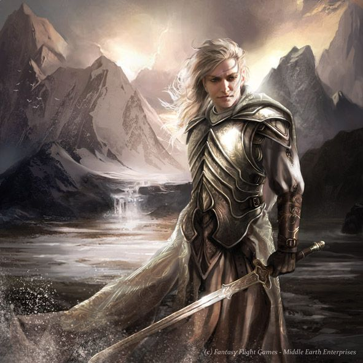

Glorfindel is one of the Noldor (or High Elves) and is named for his blond hair, which is an uncommon trait among his people. He first arrives in Middle-earth way back in the First Age and fights in the war against Sauron's boss – and the Lord of the Rings cosmology’s Devil – Morgoth. Even by Elven standards, Glorfindel is a pretty powerful guy, and when he finally falls in battle, it’s while squaring up to a freakin’ Balrog fire demon in a one-on-one contest that ends with both combatants’ deaths.
Fortunately for the Free Peoples of Middle-earth, death is only a temporary setback for Glorfindel. After a brief stint in purgatory, he’s resurrected in a new copy of his old body by the Valar, the demi-gods of Tolkien’s universe. Glorfindel doesn’t return to Middle-earth, though. Instead, he sits out what remains of the First Age in Valinor – the home of the Valar, and, for all intents and purposes, Elf Heaven. Don’t be too hard on Glorfindel, though; most Elves are re-embodied after they die, and most of them opt to stay put in Valinor.
Besides, Glorfindel’s downtime isn’t all that long, at least as Elves measure time. Fast forward to a bit over 1,500 years into the Second Age and the Valar’s leader, Manwë, sends the High Elf to help the Elves (and by extension, everyone else) deal with the rapidly escalating Sauron situation. Before Glorfindel leaves, Manwë gives him a major XP boost, bumping him up to just below angelic Maiar beings such as Sauron, Saruman, Gandalf, and Radagast on the overall Lord of the Rings power ranking chart.
Basically, he doesn’t even make the Top 10!
If you want to learn more about Glorfindel, then click here to watch a cool video about him.
About 